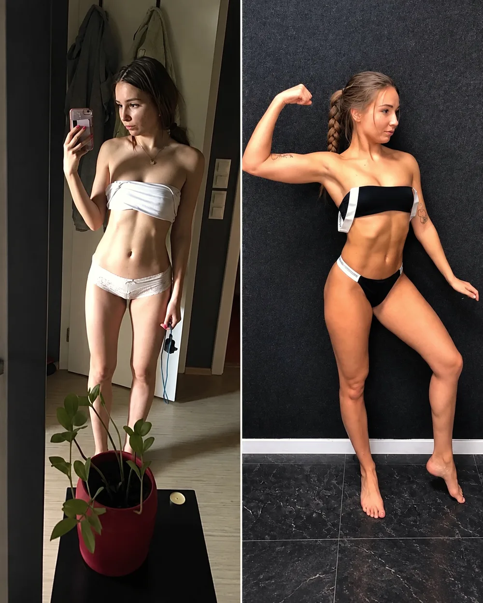
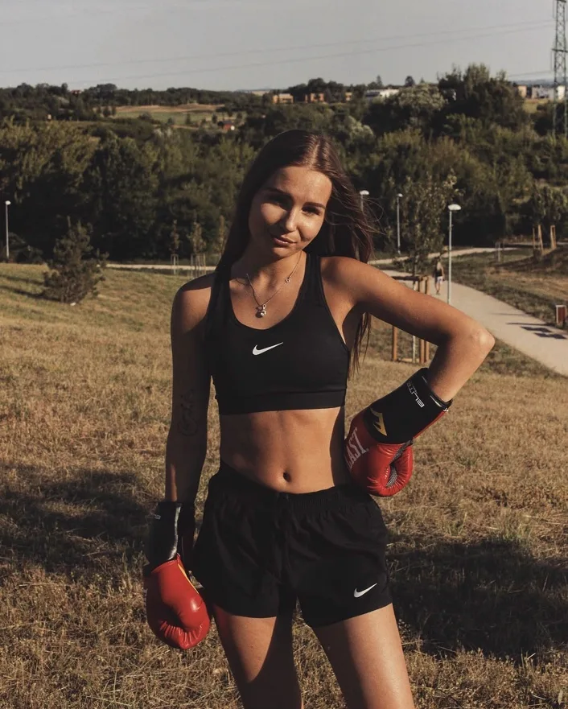
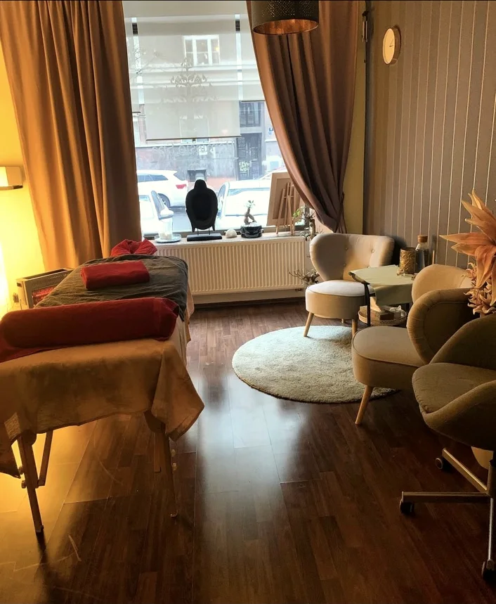
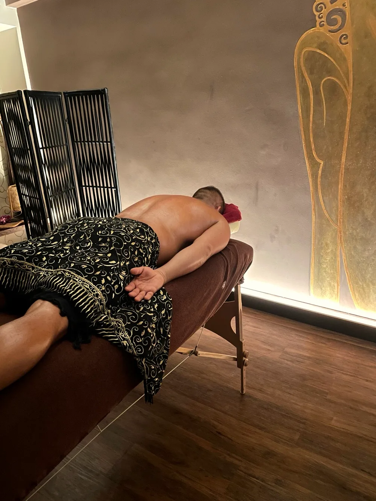
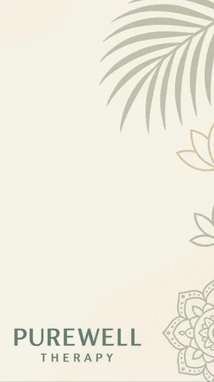
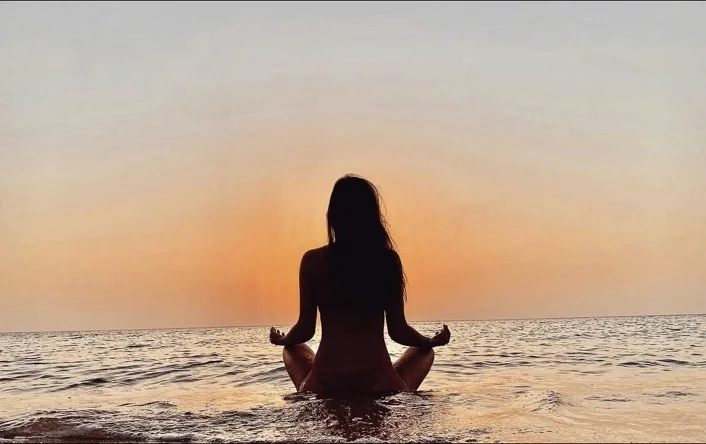
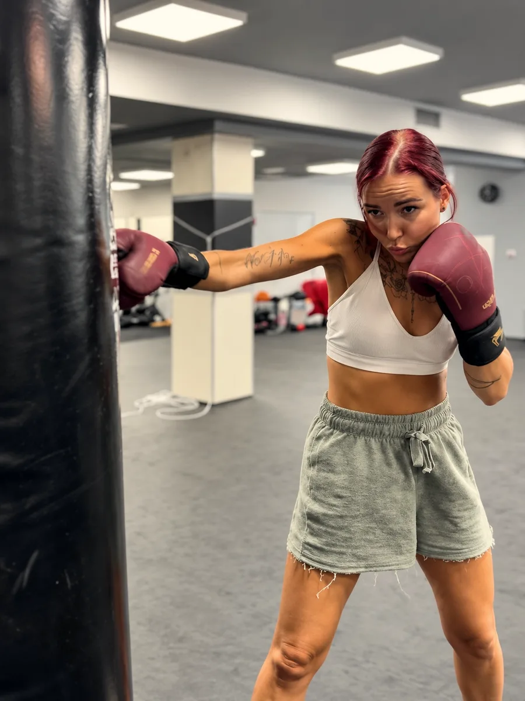
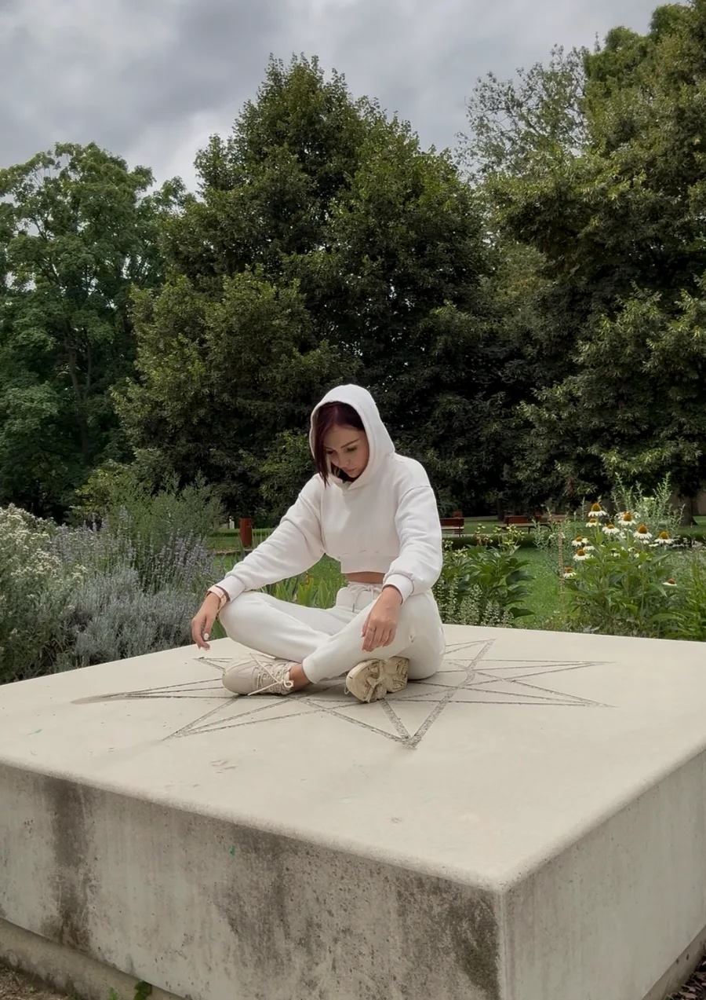

Why I do what I do
My name is Ivana Soukupová. For eight years I have worked one-to-one with the body – and today also with people on their own path to recovery. Here is the story of why.

A lifelong fascination with the body
The human body has fascinated me since I was a little girl. To this day I see it as one of the most intelligent systems there is – one that even today’s era of artificial intelligence cannot fully rival. It is my greatest passion, both in my studies and in the research I still pursue on my own.
I started giving massages at 18, beginning with classic sports, reconditioning and relaxation massage. The work fulfilled me from the very start, because I love helping others.
While studying at VŠTVS Palestra, a sports university, my deep interest in sport, fitness, physiology and combat sports transformed my clientele too. I began seeing mostly athletes, fighters and people with very active lives. It was a challenge: they often deal with injuries and need more specialised care than a classic reconditioning massage can offer. Alongside my medical coursework, I therefore added training in deep tissue massage, trigger point therapy, spinal mobilisation and other mobilisation techniques, post-isometric relaxation and corrective exercise.
During that time I also experienced first-hand what movement and bodywork can do. At university, sport quite literally healed me after years of struggling with anxiety, panic attacks, malnutrition and anorexia. Palestra gave me more than theory and a coaching qualification – I discovered on myself what consistent exercise and bodywork can do for both body and mind. Combat sports then became another milestone in my own somatic practice, and they remain a great passion of mine to this day.


Eight years in pictures
From my first massages at eighteen, through my favourite massage studios, to the first incarnation of the Pure Well brand.




A trial that deepened my work
A few years later, after I had COVID, came another major trial. For years I lived with conditions that threatened the quality of my life on every level. At 25, after unsuccessful treatments and a hospital stay, my doctors told me I should apply for full disability.
I refused to accept that. Little by little – through movement, exercise, dance, boxing and gradually titrating mental discomfort – I began to recover.
Working with my body and nervous system very likely saved my life back then. It also deepened my interest in how the nervous system connects body and mind. That is why I expanded my massage practice with a somatic approach. Thanks to this journey, I now also work as an accredited peer consultant in mental health – and my curiosity about the mysteries of human potential never ends.
Today, after my illness, I am back to an active life. Boxing, obstacle races and moments of silence in nature. To me, challenges are not obstacles – they are the path.



Experience and education
One-to-one practice
Since the age of 18. For the first five years, massage was my full-time, everyday work.
Certificates
Massage, body therapy, coaching and peer work.
Accreditations
Trainer (fitness and therapeutic exercise instructor) and peer consultant in mental health.
My wall of diplomas
Three years of university study at VŠTVS Palestra and 16 certified courses. Massage and bodywork courses form the foundation. Insights from other fields help me see each person in a wider context.
Massage and body therapy
- Sports and reconditioning massage · Mavo, 2016
- Traditional Thai massage I · EduSpa, 2018
- Dorn method and Breuss massage · EduSpa, 2019
- Kinesio taping I · EduSpa, 2019
- Trigger point therapy · EduSpa, 2019
- Anti-cellulite and body contouring massage · EduSpa, 2019
Movement and coaching
- Therapeutic exercise instructor · VŠTVS Palestra, 2020
- Relaxation exercise course · VŠTVS Palestra, 2020
- Fitness instructor, Level II · Fitness Coach Academy, 2020
- Fitness coaching · Fitness Coach Academy, 2020
- First aid course · SSI Group, 2020
Mental health
- Accredited course for peer consultants in mental health · PhDr. Světlana Soldánová, 2025
Other education
- VŠTVS Palestra – three-year university programme in leisure-time education
- Youth and residential care education · VŠTVS Palestra, 2020
- Planning and leading outdoor programmes · VŠTVS Palestra, 2018
- Reiki I · Master Ing. Petr Chmelík, 2017
- Trichology and dermatotrichology · Kapyderm, 2018
Your body and mind are the only garment you will wear for the rest of your life.
So let’s make it as good a place to live as we can.